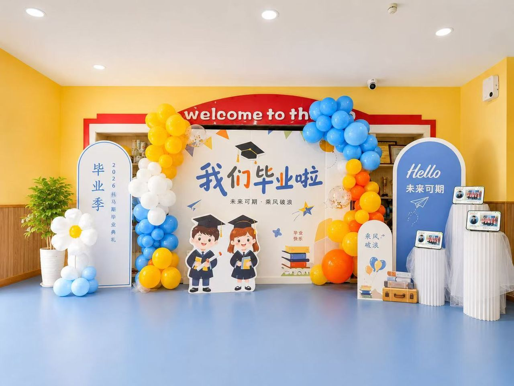
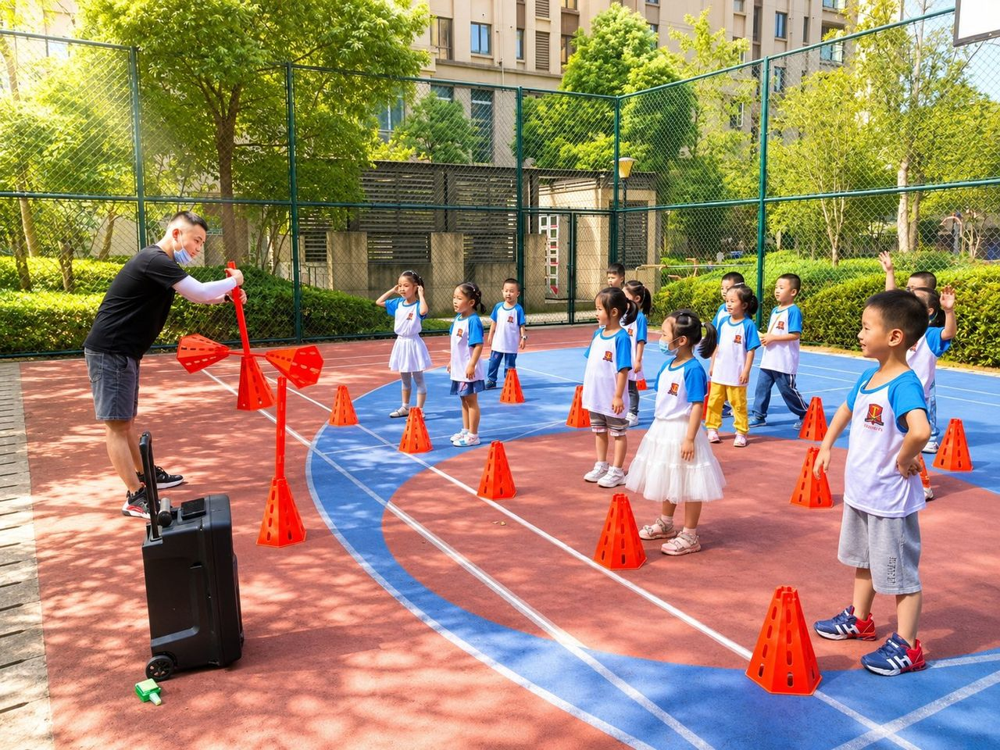
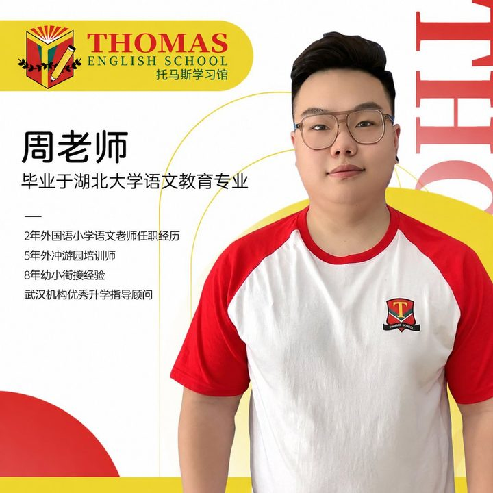
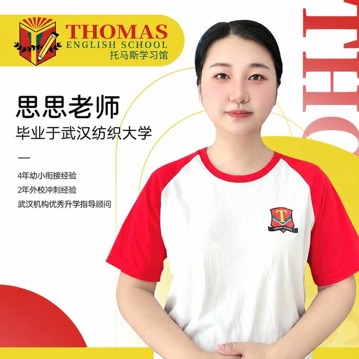

课堂适应
关注倾听、规则、任务意识与小学生活准备。
武汉 · 汉阳 · 王家湾
5—6岁幼小衔接全日班，平均每班约10名孩子。幼少儿英语平均8—10人班，POWER UP搭配瑞格自然拼读。
从习惯、自理与表达开始，陪孩子从容迈向小学。
人信汇二期一号门旁 · 校区地址 →我们的关注点
我们关注孩子的学习习惯、表达能力和成长节奏，也重视他们在课堂与日常生活中的每一点进步。
关注倾听、规则、任务意识与小学生活准备。
练习整理物品、表达需求与完成日常任务。
借助故事、互动和可理解情景，鼓励自然表达。
关注每位孩子不同的适应节奏与参与方式。
课程介绍
从入学适应到语言启蒙，了解适合不同成长阶段的课程内容与学习重点。
重点关注小学适应、课堂规则、专注倾听、自理与社交能力，不以超前刷题为目标。
查看幼小衔接完整专题 →围绕绘本故事、听说互动、自然拼读与阶段性读写，引导孩子把英语当作交流工具。
查看少儿英语完整专题 →在安全、包容的氛围里表达想法，允许不同的学习节奏。
学习与同伴相处、接受反馈、承担责任并修正行为。
从理解任务到独立检查，让学习能力落在日常行动中。
校园风采
前台、教室、课堂与活动瞬间，都来自校区实拍。欢迎预约到校，实地感受孩子的学习环境。








记录孩子们在校区主题活动中的真实状态：敢开口、愿参与、玩得投入。更多日常动态，欢迎到校参观或咨询老师。
家长知识库
从课程安排、师资、教学方式到日常管理，整理家长真正关心的选校问题，帮助你做出适合孩子的选择。
师资团队
下方为校区提供的教师介绍卡，经历与年限按卡片记载。欢迎到校交流，确认当期任课安排。

毕业于华中师范大学，12年幼升小经验，汉阳区名师

毕业于湖北大学语文教育专业，8年幼小衔接经验

毕业于湖北第二师范学院，6年幼儿园园长经历，托马斯幼小衔接教材副主编
毕业于江汉大学，5年幼小衔接经验

毕业于武汉纺织大学，4年幼小衔接、2年外校冲刺经验

曼彻斯特大学硕士，14年英语教学及管理经验，雅思7.5分口语满分
毕业于中南民族大学，剑桥英语教学能力证书TKT1-3，熟悉Power Up原版教材

毕业于湖北民族大学，剑桥商务英语高级证书，7年幼少儿教学经验
毕业于武汉科技大学，托马斯北京总部讲师，7年外冲经验
常见问题
关于课程年龄、内容和参观事宜，可先查看答案，再联系老师核实当期安排。
校区地址为武汉市汉阳区龙兴西街人信汇F地块二期7幢1—2层6商号，入口在人信汇二期一号门旁。建议参观前电话确认到访时间。
幼小衔接课程主要面向5–6岁儿童，设有平均每班约10名孩子的小班。具体班型和招生名额可咨询周老师。
少儿英语课程主要面向不同阶段的幼少儿，包含绘本故事、英语听说互动、自然拼读及 Power Up 教材相关学习内容。课程分级与开课信息可咨询 Windy 老师。
欢迎提前联系课程老师，了解适合孩子的班型、课程安排及到校参观时间。
校区课程资料
托马斯学习馆王家湾人信汇校区提供的课程、师资分工和日常配套说明。
从身心、生活、社会和学习四个方面，介绍托马斯学习馆王家湾人信汇校区怎样把入学准备落实到课堂与日常生活。
阅读全文 →幼小衔接介绍校区如何围绕专注、听指令、表达、自理、社交与任务意识做入班观察和阶段跟踪，让反馈更具体。
阅读全文 →少儿英语从全英文情境、可理解输入、轮流互动与重述式引导，介绍托马斯人信汇校区英语课堂的参与方式。
阅读全文 →招生咨询
适合的课程因孩子年龄、基础与班级安排而异。可联系老师了解当期教学安排、收费及开放参观时间。
武汉市汉阳区龙兴西街人信汇F地块二期7幢1—2层6商号（人信汇二期一号门旁）